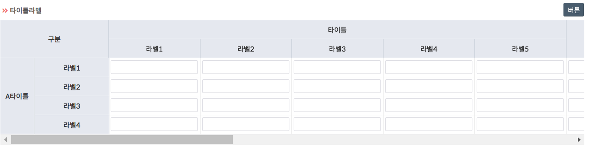
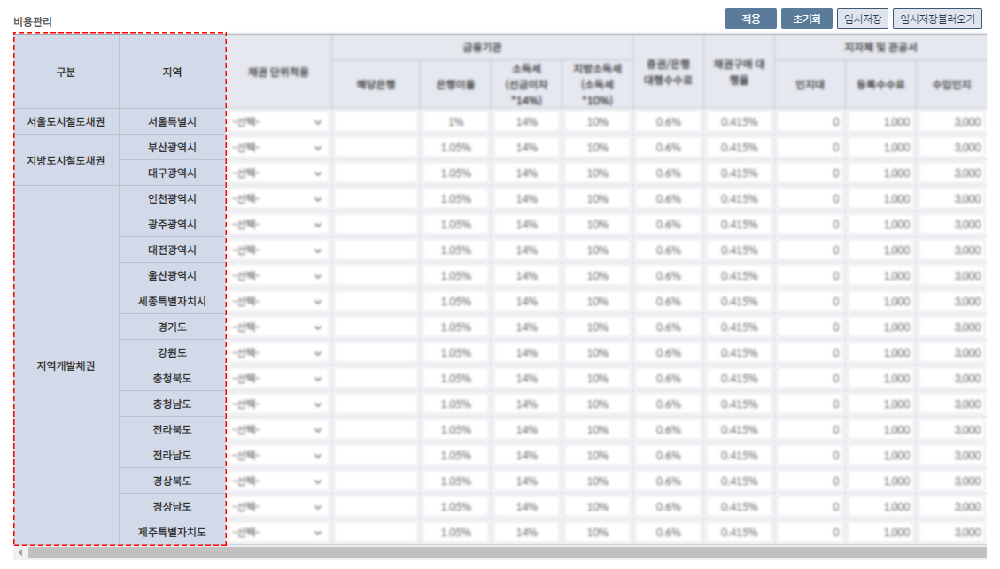

MOCA
Table

1
Table
테이블형태로 데이터를 불러올 수 있는 컴포넌트 입니다.
텍스트필드, 버튼, 체크박스와 같은 컴포넌트들도 사용할 수 있습니다.
2
fixedColumn
컬럼갯수가 많을경우 원하시는 컬럼을 고정시킬수 있습니다.

3
input
입력값을 넣거나 불러올 수 있는 input 컴포넌트 입니다.
4
input button
돋보기 아이콘을 추가해 별도의 팝업을 불러올 수 있는 컴포넌트 입니다.
5
radio & checkbox
항목을 선택하는 경우에 선택할 수 있는 항목이 하나인지 아니면 두 개 이상인지에 따라 Radio 컴포넌트와 CheckBox 컴포넌트를 사용합니다.
6
comboBox
Combo는 여러 아이템 목록 중에서 한 개 값을 선택하기 위한 용도로 사용하는 컴포넌트 입니다.
7
calendar
single calendar와 multicalendar 를 type을 통해 설정할 수 있습니다.
displayFormat을 통해 보여주는 포맷을 설정할 수 있습니다.
defaultValue로 캘린더의 기본 날짜를 설정할 수 있습니다.
selectItem으로 다양한 옵션의 기간 설정을 할 수 있습니다.